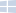

Take your computing experience to the next level.
nteract is a desktop application that allows you to develop rich documents that contain prose, executable code (in almost any language!), and images. Whether you're a developer, data scientist, researcher, or journalist, nteract helps you write your next code-driven story.
Also available for other platforms


Available on Windows, Mac OS and Linux